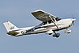

aircraft

Definition: An aircraft is a vehicle that is able to fly by gaining support from the air. It counters the force of gravity by using either static lift or the dynamic lift of an airfoil, or, in a few cases, direct downward thrust from its engines. Common examples of aircraft include airplanes, helicopters, airships (including blimps), gliders, paramotors, and hot air balloons.The human activity that surrounds aircraft is called aviation. The science of aviation, including designing and building aircraft, is called aeronautics. Crewed aircraft are flown by an onboard pilot, whereas unmanned aerial vehicles may be remotely controlled or self-controlled by onboard computers. Aircraft may be classified by different criteria, such as lift type, aircraft propulsion (if any), usage and others.
Source: Wikipedia
Wikipedia Page
Wikidata Page
Occurs in: